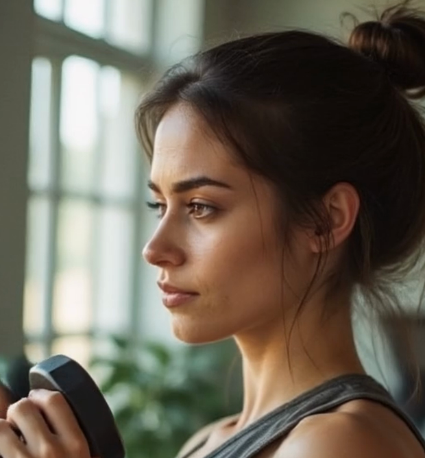
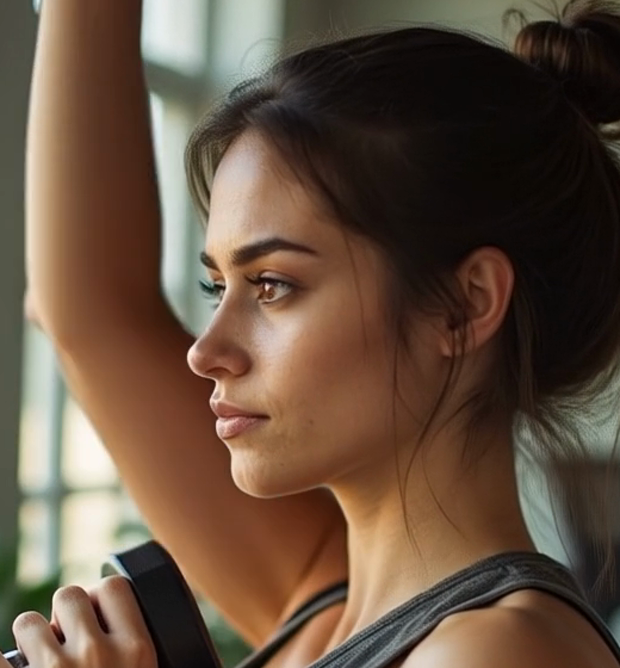
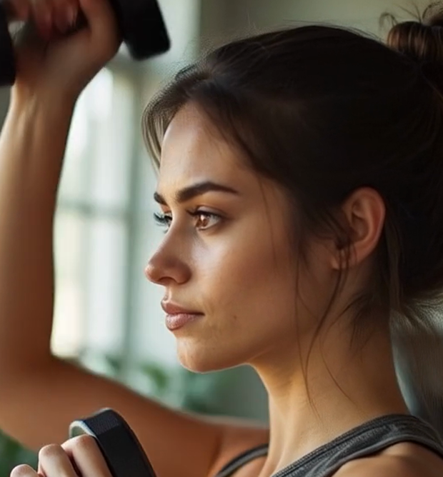

וריאציה — סצנה אחרת ✓
אישה + משקולות (לא הרץ) · עם עיגון מלא של המומחה
🆕 סצנה חדשה
💪 משקולות נשארות
🧬 אנטומיה אמיתית
⏱️ 6.6 דק'
בקרה — זום על הידיים/משקולות לאורך התנועה



התחלהסוף ◄
מה זה מוכיח: המערכת עובדת גם על סצנות שונות (לא רק הרץ), והעיגון של מומחה-הוידאו שומר על הלבוש והחפצים (המשקולות נשארו לכל האורך, אחיזה תקינה, גוף אמין).
החיבור: אותו עיגון בדיוק = הפתרון לסחיפת-הנעליים בשרשור. הבא: וריאציות נוספות + שרשור-איכות מעוגן בלי סחיפה.